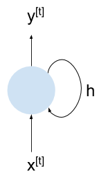
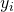

Following up on the earlier post deciphering a minimal vanilla RNN implementation, here I'd like to extend the example to a simple LSTM model.
Once again, the idea is to combine a well-commented code sample (available here) with some high-level diagrams and math to enable someone to fully understand the code. The LSTM architecture presented herein is the standard one originating from Hochreiter's and Schmidthuber's 1997 paper. It's described pretty much everywhere; Chris Olah's post has particularly nice diagrams and is worth reading.
LSTM cell structure
From 30,000 feet, LSTMs look just like regular RNNs; there's a "cell" that has a recurrent connection (output tied to input), and when trained this cell is usually unrolled to some fixed length.
So we can take the basic RNN structure from the previous post:
LSTMs are a bit trickier because there are two recurrent connections; these can be "packed" into a single vector h, so the above diagram still applies. Here's how an LSTM cell looks inside:
x is the input; p is the probabilities computed from the output y (these symbols are named consistently with my earlier RNN post) and exit the cell at the bottom purely due to topological convenience. The two memory vectors are h and c - as mentioned earlier, they could be combined into a single vector, but are shown here separately for clarity.
The main idea of LSTMs is to enable training of longer sequences by providing a "fast-path" to back-propagate information farther down in memory. Hence the c vector is not multiplied by any matrices on its path. The circle-in-circle block means element-wise multiplication of two vectors; plus-in-square is element-wise addition. The funny greek letter is the Sigmoid non-linearity:
The only other block we haven't seen in the vanilla RNN diagram is the colon-in-square in the bottom-left corner; this is simply the concatenation of h and x into a single column vector. In addition, I've combined the "multiply by matrix W, then add bias b" operation into a single rectantular box to save on precious diagram space.
Here are the equations computed by a cell:
Backpropagating through an LSTM cell
This works exactly like backprop through a vanilla RNN; we have to carefully compute how the gradient flows through every node and make sure we properly combine gradients at fork points. Most of the elements in the LSTM diagram are familiar from the previous post. Let's briefly work through the new ones.
First, the Sigmoid function; it's an elementwise function, and computing its derivative is very similar to the tanh function discussed in the previous post. As usual, given , from the chain rule we have the following derivative w.r.t. some weight w:
To compute the derivative , we'll use the ratio-derivative formula:
So:
A clever way to express this is:
Going back to the chain rule with , we get:
The other new operation we'll have to find the derivative of is element-wise multiplication. Let's say we have the column vectors x, y and z, each with m rows, and we have . Since z as a function of x has m inputs and m outputs, its Jacobian has dimensions [m,m].
is the derivative of the i-th element of z w.r.t. the j-th element of x. For this is non-zero only when i and j are equal, and in that case the derivative is .
Therefore, is a square matrix with the elements of y on the diagonal and zeros elsewhere:
If we want to backprop some loss L through this function, we get:
As x has m elements, the right-hand side of this equation multiplies a [1,m] vector by a [m,m] matrix which is diagonal, resulting in element-wise multiplication with the matrix's diagonal elements. In other words:
In code, it looks like this:
# Assuming dz is the gradient of loss w.r.t. z; dz, y and dx are all
# column vectors.
dx = dz * y
Model quality
In the post about min-char-rnn, we've seen that the vanilla RNN generates fairly low quality text:
one, my dred, roriny. qued bamp gond hilves non froange saws, to mold his a work, you shirs larcs anverver strepule thunboler muste, thum and cormed sightourd so was rewa her besee pilman
The LSTM's generated text quality is somewhat better when trained with roughtly the same hyper-parameters:
the she, over is was besiving the fact to seramed for i said over he will round, such when a where, "i went of where stood it at eye heardul rrawed only coside the showed had off with the refaurtoned
I'm fairly sure that it can be made to perform even better with larger memory vectors and more training data. That said, an even more advanced architecture can be helpful here. Moreover, since this is a character-based model, to really capture effects between words a few words apart we'll need a much deeper LSTM (I'm unrolling to 16 characters we can only capture 2-3 words), and hence much more training data and time.
Once again, the goal here is not to develop a state-of-the-art language model, but to show a simple, comprehensible example of how and LSTM is implemented end-to-end in Python code. The full code is here - please let me know if you find any issues with it or something still remains unclear.